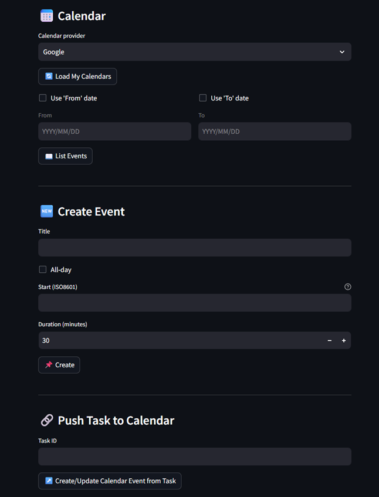
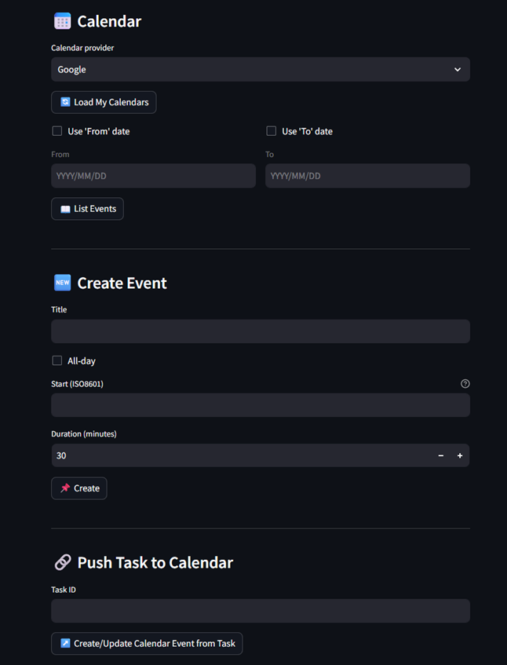
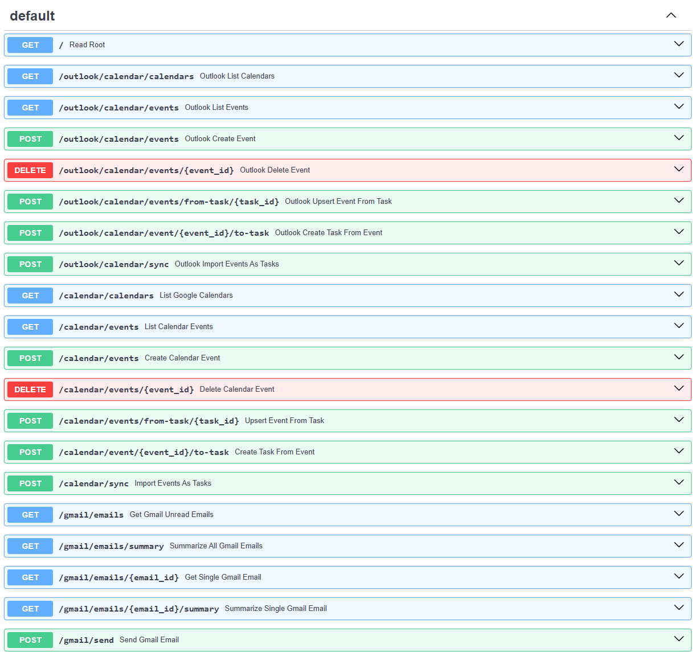
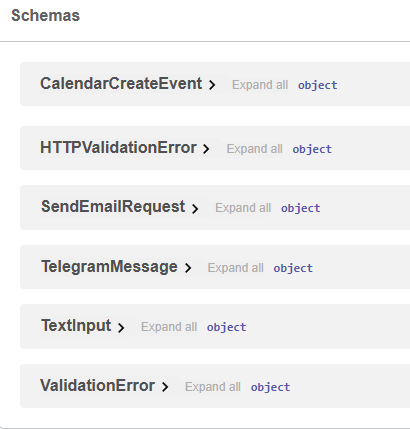

Core Features
- Unified API Gateway – Integrates multiple external services under one schema.
- Task Automation – Automatically creates and syncs tasks across tools like Calendars, Mail services and social media.
- Event Scheduling – Connects with Google Calendar for meeting and reminder management.
- Summarization Engine – Uses OpenAI API to summarize long text inputs or meeting notes.
- Async API Design – Built entirely asynchronous for speed and scalability.
Development Highlights
- - Designed a modular routes with separate endpoints for AI, scheduling, and data sync.
- - Implemented dependency injection using FastAPI’s built-in dependency system.
- - Configured environment-based API key management.
- - Integrated async requests with retry handling for external APIs and logging via Python’s logging module.